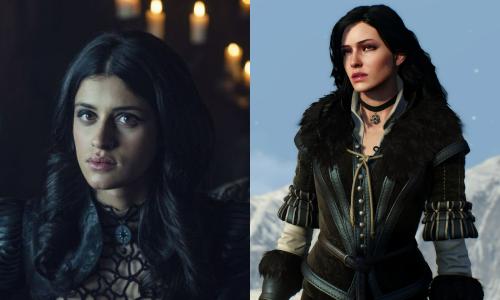
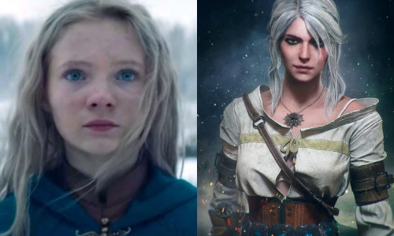
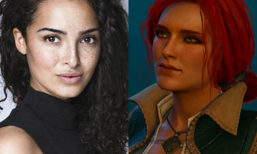
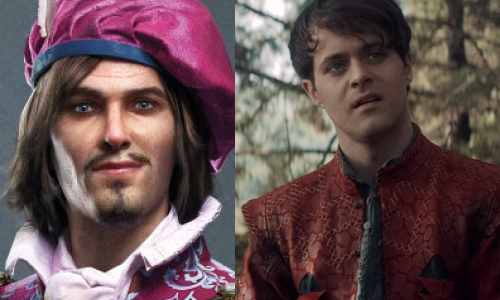
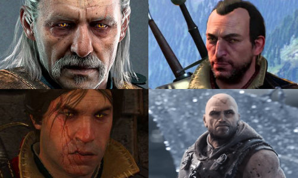
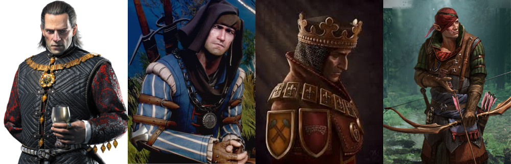

Personagens Principais de The Witcher
Yennefer

Yennefer de Vengerberg (em polonês: Yennefer z Vengerbergu) é uma feiticeira que viveu na cidade
de Vengerberg, capital de Aedirn, tendo nascido em Belleteyn no ano de 1173. Ela é o grande amor
do bruxo Geralt de Rívia e uma figura materna para Ciri, além de ser uma amiga próxima de Triss
Merigold. Grã-mestra de Magia, a poderosa feiticeira era famosa e muito respeitada, sendo a mais
jovem membra do Conselho Supremo. Ex-combatente de guerra, ela perdera a visão durante a 2ª
Batalha por Sodden, que por fim foi recuperada através de magia. Diferente das outras magas,
Yennefer não era membra de nenhum conselho real – como sua amiga Triss Merigold a serviço do rei
Foltest. Às vezes, quando solicitado e por morar na capital de Aedirn, Yennefer colaborava com o
rei Demawend.
"Quando eu criei Yennefer, eu queria que Geralt se desenvolvesse completamente, mas então eu
decidi complicar as coisas. Eu criei uma personagem feminina que se nega a fazer parte do
estereótipo da fantasia. Para o prazer do leitor." Andrzej Sapkowski
Ciri
Cirilla Fiona Elen Riannon, rainha de Cintra, princesa de Brugge e duquesa de Sodden, herdeira de
Inis Ard Skellig e Inis An Skellig, soberana de Attre e Abb Yarra. Conhecida como Leoazinha de
Cintra ou para os íntimos, Ciri, nasceu em 1253 durante o festival Belleteyn. Ela é filha única
de Pavetta, a princesa de Cintra, e Duny, o Ouriço de Erlenwald. E neta da rainha Calanthe. Ciri
também é ligada pelo Destino com o bruxo Geralt de Rívia.

Triss Merigold

Triss Merigold de Maribor era uma alegre feiticeira de cabelos castanhos, sempre rindo e mais
parecia uma adolescente. Tinha os cabelos longos e cacheados na cor de castanha fresca que
brilhavam com reflexos dourados. Esta era sua marca registrada e motivo de orgulho.
Ela é amiga de Yennefer e do bruxo Geralt de Rivia, por quem nutre uma paixão não correspondida.
Ela auxiliou Ciri em Kaer Morhen por algum tempo e se considera uma irmã mais velha para a
menina. Foi através de sua intervenção que Ciri não recebeu inadvertidamente hormônios nocivos
que poderiam ter um impacto negativos em seus "dotes femininos". Ela era um membro do conselho
real do Rei Foltest junto com Fercart e Keira Metz, bem como um membro co-fundador da Loja das
Feiticeiras.
Dandelion/Jaskier
Jaskier (nos jogos: Dandelion ou Dandilion), cujo nome real é Julian Alfred Pankratz, é um poeta,
menestrel, bardo, e o amigo mais próximo do bruxo Geralt de Rivia. Ele estudou as Sete Artes
Liberais por quatro anos na Universidade de Oxenfurt (durante os seus estudos, conquistou a
reputação de preguiçoso, bêbado e idiota) e tornou-se mais tarde, depois de passar nas provas
com resultados excepcionais, professor. Ele deu aulas durante um ano, mas, em seguida, deixou a
academia para viajar pelo mundo. Jaskier no entanto ainda visita Oxenfurt de vez em quando para
dar palestras. Seu nome, em polonês, é o nome de uma flor, e por isso, em inglês, Jaskier é
chamado Dandelion (em português, dente-de-leão).

Bruxos

Vesemir ou Vasemir(primeiro da foto) é o bruxo mais velho e mais experiente de Kaer Morhen. Ele
é uma figura paterna para Geralt e para os outros bruxos. Ele passa todos os invernos na
fortaleza Kaer Morhen e vai para a estrada na primavera. Ele é um excelente esgrimista e tem
grande conhecimento sobre monstros.
Lambert(segundo na foto) é um dos mais jovens bruxos de Kaer Morhen. Famoso por sua língua
afiada, por vezes se mostra rude, e não parece muito afeiçoado a Triss Merigold, à qual ele
habitualmente chama somente pelo seu sobrenome, Merigold. Ele também não tem muita afinidade com
política, uma característica comum à maioria dos bruxos, tendo ainda ajudado a treinar Ciri na
arte do combate.
Eskel(terceiro na foto) é um bruxo calmo e amigo de juventude de Geralt. Eles cresceram juntos
em Kaer Morhen e também passaram pelos treinamentos juntos. Ele é considerado igualmente hábil e
experiente quanto Geralt.
Letho de Gulet(quarto da foto), também conhecido como o
Regicida, é um bruxo da Escola da Víbora e o principal antagonista de The Witcher 2: Assassins
of Kings. Seus associados mais próximos são Auckes e Serrit, também regicidas e bruxos da Escola
do Víbora.
Alguns destaques

Emhyr | Vernon Roche | Rei Foltest | Iorhveth
Emhyr var Emreis, Deithwen Addan yn Carn aep Morvudd (na Língua Antiga - A chama branca que dança nos túmulos dos seus inimigos), é o atual imperador de Nilfgaard nos romances, na série de TV, livro e jogos. Ele é publicamente favorável a raça antiga, ao contrário dos reis do norte.
Vernon Roche trabalha para o Rei Foltest e tem sua primeira aparição em The Witcher 2: Assassins of Kings. Roche tem servido por quatro anos com a unidade dos Listras Azuis. Por sua devoção e eficiência foi condecorado duas vezes com a Ordem de Bravura.
Foltest , um monarca sábio e bem-apessoado, foi rei de Teméria, sua primeira aparição nos games também foi em The Witcher 2: Assassins of Kings. Sua história está fortemente ligada ao conto da estrige, um dos primeiros do livro o Ultimo Desejo.
Iorweth Iorweth é um elfo, um inimigo bem conhecido dos seres humanos, responsável pela queima de muitas aldeias humanas e mortes de muitos civis. Sua primeira aparição nos games também foi em The Witcher 2: Assassins of Kings.